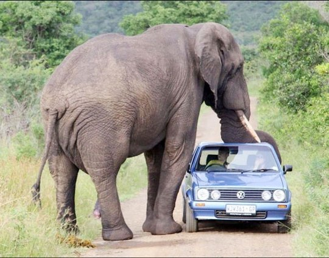
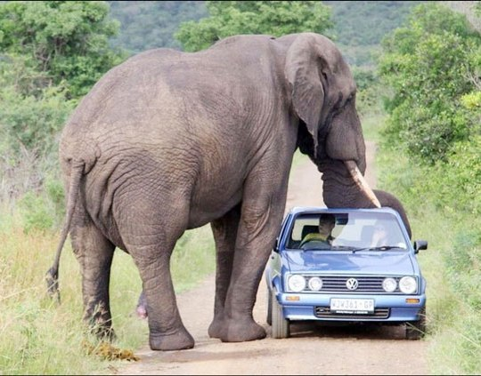
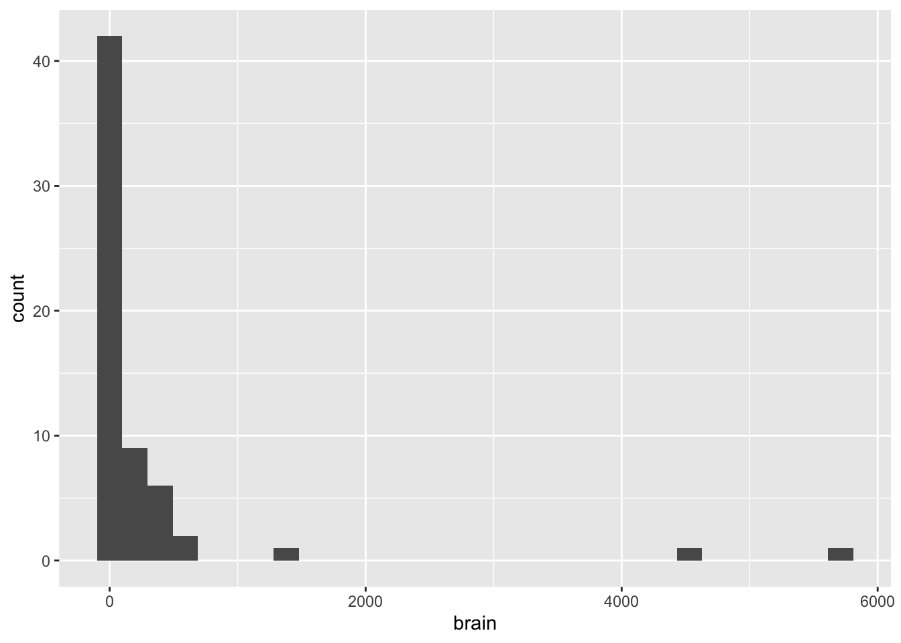
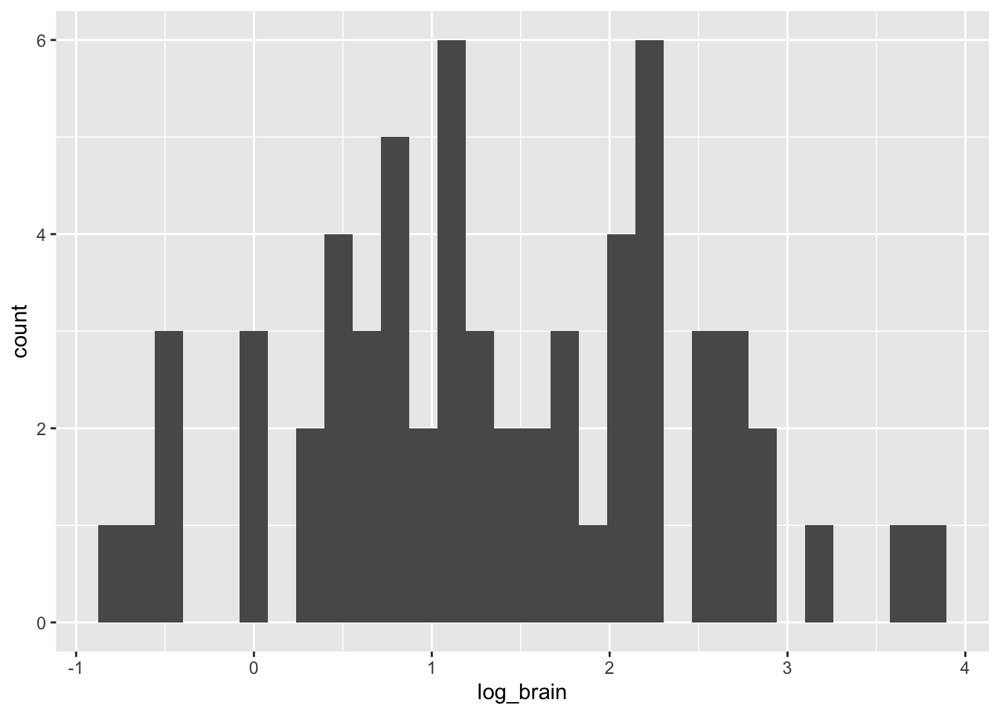

Variables y Manejo de Datos
1.2.Variables y Manejo de Datos
Las estadísticas, como toda rama de las ciencias y las matemáticas, posee un vocabulario propio, para referirse a lo que es sujeto de medición o se puede contar, asi como sobre la manera en que los datos son organizados.
Definiciones
1.2.1.Tipos de Variables
Objetivo
Distinguir los diferentes tipos de variables estadísticas y sus propiedades

tipos de variables
Definiciones
variable categórica
variable nominal
variable ordinal
variable numérica
variable discreta
variable continua
Ejercicios
Ejemplos: un ejemplo de cada tipo de variable categórica y numérica.
Tipos de datos en R y tipos de variables: revisar esta página Tipos de Datos y establecer la relación entre tipos de datos en R y tipos de variables estadísticas.
1.2.2.Transformación de Variables
Objetivo
Reconocer distribuciones sesgadas de valores de una variable numérica y transformarla
Los valores (datos) de una variable numérica pueden presentar una distribución sesgada, debido a que son tomados de individuos en regiones extremas en la escala de la variable. Esto es muy común en estudios con categorías muy amplias (etapas de desarrollo, diversidad taxonómica).
Vamos a analizar los datos de masa del cerebro (g) de 62 especies de mamíferos en un amplio rango de tamaños.
 

# paquetes necesarios - debes descargarlos usando [Packages]
library(MASS)
library(ggplot2)
# revisando los datos del archivo mammals
mammals## body brain
## Arctic fox 3.385 44.50
## Owl monkey 0.480 15.50
## Mountain beaver 1.350 8.10
## Cow 465.000 423.00
## Grey wolf 36.330 119.50
## Goat 27.660 115.00
## Roe deer 14.830 98.20
## Guinea pig 1.040 5.50
## Verbet 4.190 58.00
## Chinchilla 0.425 6.40
## Ground squirrel 0.101 4.00
## Arctic ground squirrel 0.920 5.70
## African giant pouched rat 1.000 6.60
## Lesser short-tailed shrew 0.005 0.14
## Star-nosed mole 0.060 1.00
## Nine-banded armadillo 3.500 10.80
## Tree hyrax 2.000 12.30
## N.A. opossum 1.700 6.30
## Asian elephant 2547.000 4603.00
## Big brown bat 0.023 0.30
## Donkey 187.100 419.00
## Horse 521.000 655.00
## European hedgehog 0.785 3.50
## Patas monkey 10.000 115.00
## Cat 3.300 25.60
## Galago 0.200 5.00
## Genet 1.410 17.50
## Giraffe 529.000 680.00
## Gorilla 207.000 406.00
## Grey seal 85.000 325.00
## Rock hyrax-a 0.750 12.30
## Human 62.000 1320.00
## African elephant 6654.000 5712.00
## Water opossum 3.500 3.90
## Rhesus monkey 6.800 179.00
## Kangaroo 35.000 56.00
## Yellow-bellied marmot 4.050 17.00
## Golden hamster 0.120 1.00
## Mouse 0.023 0.40
## Little brown bat 0.010 0.25
## Slow loris 1.400 12.50
## Okapi 250.000 490.00
## Rabbit 2.500 12.10
## Sheep 55.500 175.00
## Jaguar 100.000 157.00
## Chimpanzee 52.160 440.00
## Baboon 10.550 179.50
## Desert hedgehog 0.550 2.40
## Giant armadillo 60.000 81.00
## Rock hyrax-b 3.600 21.00
## Raccoon 4.288 39.20
## Rat 0.280 1.90
## E. American mole 0.075 1.20
## Mole rat 0.122 3.00
## Musk shrew 0.048 0.33
## Pig 192.000 180.00
## Echidna 3.000 25.00
## Brazilian tapir 160.000 169.00
## Tenrec 0.900 2.60
## Phalanger 1.620 11.40
## Tree shrew 0.104 2.50
## Red fox 4.235 50.40Queremos ver gráficamente como se distribuyen los valores de la variable continua brain, usando un histograma.
# histograma de la masa del cerebro (g)
ggplot(data = mammals, aes(brain)) +
geom_histogram()
Hay muchos valores para masas de menos de 500 g, y esto no nos permite visualizar en detalle los datos; para arreglar esta situación, se utilizan las transformaciones de los datos (¡no son alteraciones! son solamente un cambio de la escala, como el pH).
# transformación log10 de la masa cerebral
log_brain <- log10(mammals$brain)
mamiferos <- data.frame(mammals, log_brain)
mamiferos## body brain log_brain
## Arctic fox 3.385 44.50 1.64836001
## Owl monkey 0.480 15.50 1.19033170
## Mountain beaver 1.350 8.10 0.90848502
## Cow 465.000 423.00 2.62634037
## Grey wolf 36.330 119.50 2.07736791
## Goat 27.660 115.00 2.06069784
## Roe deer 14.830 98.20 1.99211149
## Guinea pig 1.040 5.50 0.74036269
## Verbet 4.190 58.00 1.76342799
## Chinchilla 0.425 6.40 0.80617997
## Ground squirrel 0.101 4.00 0.60205999
## Arctic ground squirrel 0.920 5.70 0.75587486
## African giant pouched rat 1.000 6.60 0.81954394
## Lesser short-tailed shrew 0.005 0.14 -0.85387196
## Star-nosed mole 0.060 1.00 0.00000000
## Nine-banded armadillo 3.500 10.80 1.03342376
## Tree hyrax 2.000 12.30 1.08990511
## N.A. opossum 1.700 6.30 0.79934055
## Asian elephant 2547.000 4603.00 3.66304097
## Big brown bat 0.023 0.30 -0.52287875
## Donkey 187.100 419.00 2.62221402
## Horse 521.000 655.00 2.81624130
## European hedgehog 0.785 3.50 0.54406804
## Patas monkey 10.000 115.00 2.06069784
## Cat 3.300 25.60 1.40823997
## Galago 0.200 5.00 0.69897000
## Genet 1.410 17.50 1.24303805
## Giraffe 529.000 680.00 2.83250891
## Gorilla 207.000 406.00 2.60852603
## Grey seal 85.000 325.00 2.51188336
## Rock hyrax-a 0.750 12.30 1.08990511
## Human 62.000 1320.00 3.12057393
## African elephant 6654.000 5712.00 3.75678820
## Water opossum 3.500 3.90 0.59106461
## Rhesus monkey 6.800 179.00 2.25285303
## Kangaroo 35.000 56.00 1.74818803
## Yellow-bellied marmot 4.050 17.00 1.23044892
## Golden hamster 0.120 1.00 0.00000000
## Mouse 0.023 0.40 -0.39794001
## Little brown bat 0.010 0.25 -0.60205999
## Slow loris 1.400 12.50 1.09691001
## Okapi 250.000 490.00 2.69019608
## Rabbit 2.500 12.10 1.08278537
## Sheep 55.500 175.00 2.24303805
## Jaguar 100.000 157.00 2.19589965
## Chimpanzee 52.160 440.00 2.64345268
## Baboon 10.550 179.50 2.25406445
## Desert hedgehog 0.550 2.40 0.38021124
## Giant armadillo 60.000 81.00 1.90848502
## Rock hyrax-b 3.600 21.00 1.32221929
## Raccoon 4.288 39.20 1.59328607
## Rat 0.280 1.90 0.27875360
## E. American mole 0.075 1.20 0.07918125
## Mole rat 0.122 3.00 0.47712125
## Musk shrew 0.048 0.33 -0.48148606
## Pig 192.000 180.00 2.25527251
## Echidna 3.000 25.00 1.39794001
## Brazilian tapir 160.000 169.00 2.22788670
## Tenrec 0.900 2.60 0.41497335
## Phalanger 1.620 11.40 1.05690485
## Tree shrew 0.104 2.50 0.39794001
## Red fox 4.235 50.40 1.70243054# histograma con variable transformada
ggplot(data = mamiferos, aes(log_brain)) +
geom_histogram()